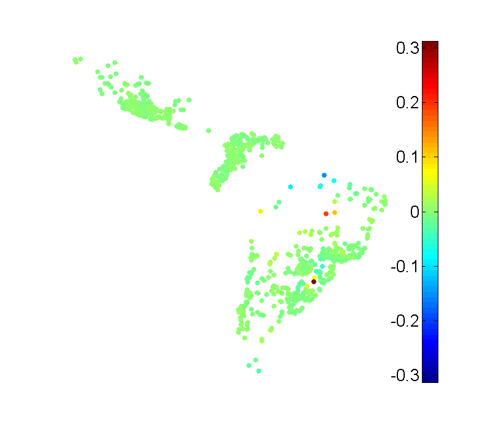
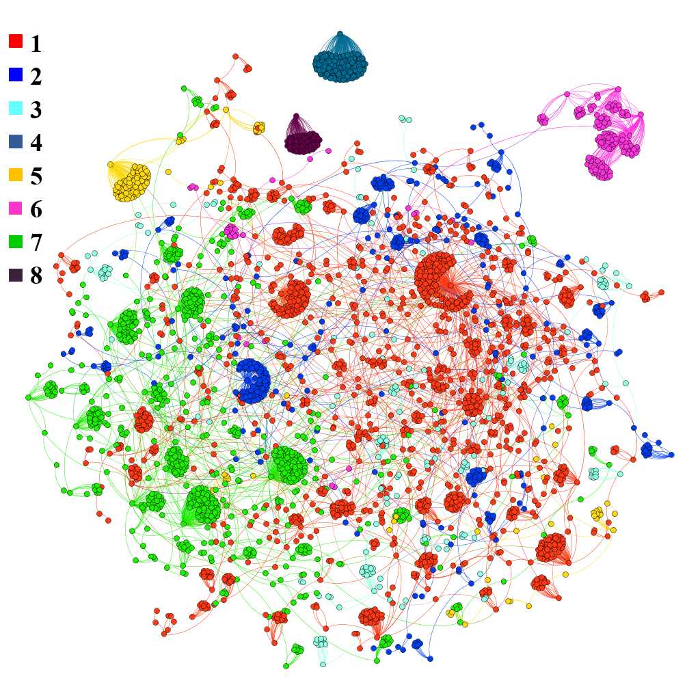
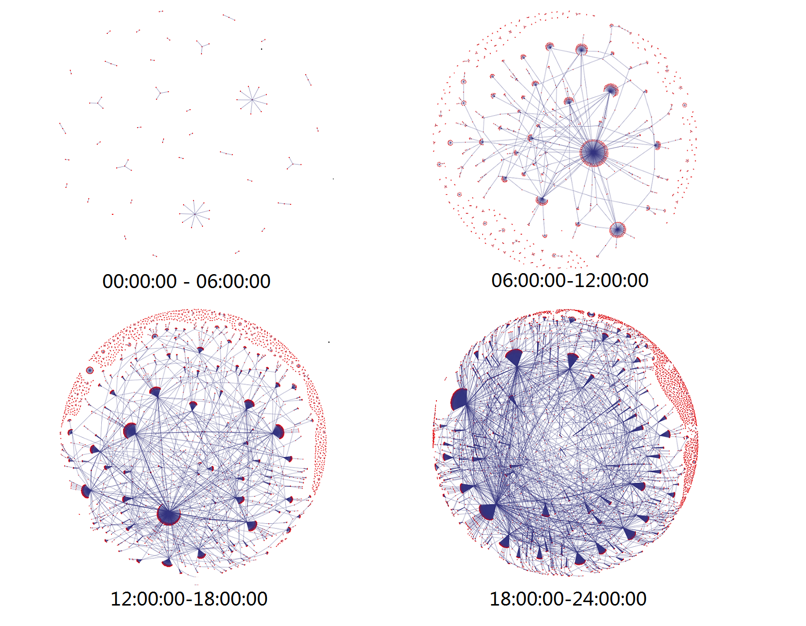
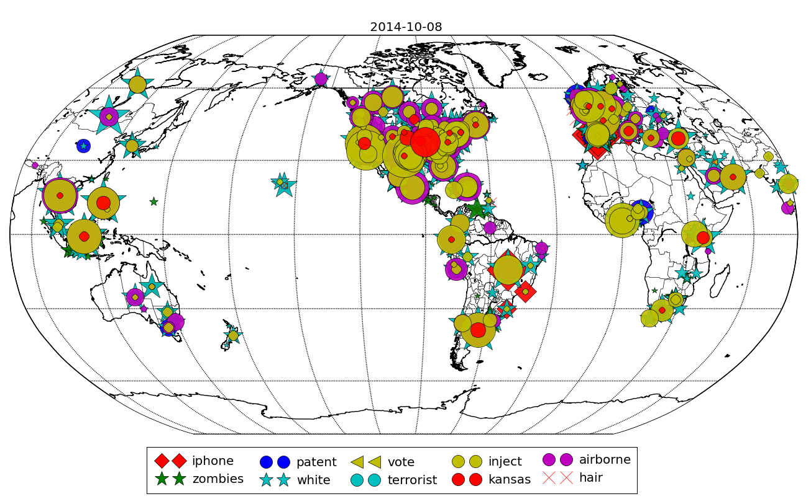
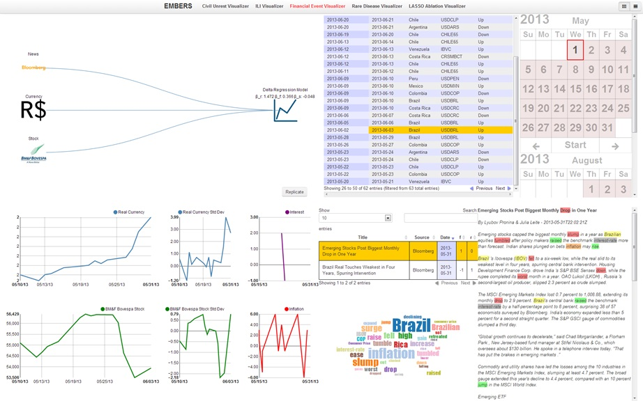

|  |
Event detection based on group absenteeism Traditional approaches to event detection in social networks primarily focus on large deviations of user activity from the norm. These disruptive events, such as earthquakes and power outages, can cause abnormal behaviors in social media in two distinct phases: group absenteeism followed by bursts in increased user activity. |
|  |
Modeling mass protest adoption in social network We focus on Twitter's user networks during protests and similar civil unrest activities. Our goals are to model the propagation and growth of contagion-like protest waves within a social network and to understand the social and structural dynamics underlying such phenomena. |
|  |
Epidemiological modeling of news and rumors on Twitter As Twitter gains in popularity, it has also become a venue to broadcast rumors and misinformation. We use epidemiological models to characterize information cascades in twitter resulting from both news and rumors. |
|  |
Misinformation on Twitter in the age of Ebola As the Ebola disease rages on in West Africa, the only other epidemic being talked about is the rapid spread of misinformation on social media about the disease, its origins and impact, and response strategies. We sought to characterize the spread of both news and rumors on Twitter about the deadly disease with a view to understanding the prevalence of misinformation. |
|  |
EMBERS: Tracking multiple social media for stock market event predictions In addition to traditional market indicators, growth of varied social media has enabled economists to leverage micro- and real-time indicators about factors possibly influencing the market, such as public emotion, anticipations and behaviors. |